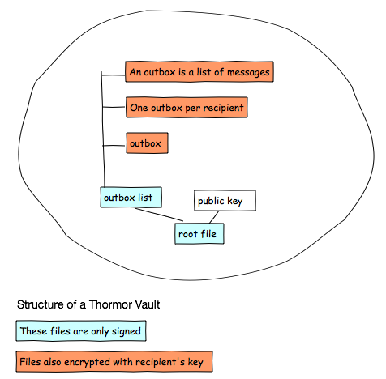

A Thormor vault is a way to organize files online to form a distributed, secure and private message exchange system.
Current ways to post updates or share content lets the service provider peek into what's being shared (Facebook, Google+, Gmail, Path etc.) Providers often track and analyze the user's actions and content, and monetize the resultant profile. This often raises concerns when potentially sensitive material is shared through such services.
However, the technology to let us share content privately has been around for a long time. By first encrypting content with the recipient's public key, we can exchange sensitive data without revealing the contents anyone except the recipient.
If we formalize this idea, we can write client applications that allows users to independently share private, secured messages using just online storage. When necessary, they can exercise control over who can read their messages without needing to expose the contents to a provider.
Users store messages online, PGP encrypted with the recipient's public key. Recipients access the sender's storage to fetch messages, and decrypt them locally with their private key.
Any online service may inspect, modify or reveal messages to anyone.
Protect all messages transmitted or stored online, so only the intended recipients can understand the message.
Open specification, anyone should be able to write an application to host and share messages.
Discovering vaults. How do you find the thormor vault for a particular person?
Traffic analysis and anonymity. It may be possible for storage providers to use data access patterns to identify connections between individuals even if the content being exchanged is encrypted.
Securing content locally. Once a message is decrypted on a user's device, the contents are visible to other applications running locally.

Encrypted data is stored online, publicly downloadable by anyone who has a link to it.
A vault is identified by a URL that points to a signed JSON file in the cloud. This is the root file, which points to other files of interest.
The root file contains a URL to the user's PGP public key and a URL to an outbox list file.
The outbox list is a signed JSON file with a list of URLs, each pointing to an outbox file. There may be one or more outbox files for each recipient who can access the vault.
Each outbox file is an encrypted JSON file with entries, one for each message. A message may internally refer to other encrypted files, depending on the type of message. For instance, a message sharing a picture contains metadata about the picture as well as a URL to the image itself.
The outbox file and any referenced files are encrypted with the recipient's public key, so only the recipient can read this outbox.
To send a message to a list of recipients, the sender first adds an outbox entry, one for each recipient. The sender then updates the outbox file for each recipient (after encrypting the outbox file with the recipient's public key and signing it.)
To fetch messages, the receiver polls the sender's outbox URL for that recipient, and decrypts it locally to recover the message entries.
Senders may also choose to create detached messages. Such messages do not require the outbox mechanism. A detached message is simply stored as a separate file, and the URL to this file is directly used to retrieve the message.
URLs to detached messages may be used to send secure messages over an existing communication channel with a recipient. For instance, the URL can be sent as a private message on twitter or facebook with a hashtag to identify it as a detached message. Client applications can detect such messages, fetch the URL and decrypt it locally.
There is a specification with details about the format of vaults and messages.
A standalone java library including a sample shell to manage vaults.